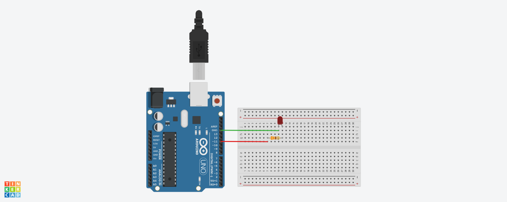
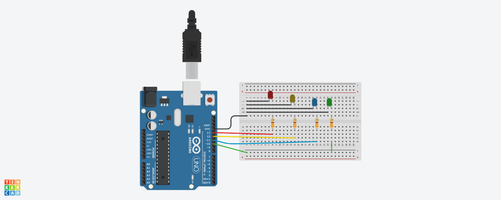

Interfacing Light Emitting Diode(LED)- Blinking LED:
⇛ This use case will be used for familiarizing the GPIO (General Purpose Input / Output) peripheral of atmega micro
controller. The LED will be used as a device and GPIO will work as output mode.
- ✬ int :
- ⇛ Integers are your primary data-type for number storage.
- ⇛ On the Arduino Uno (and other ATmega based boards) an int stores a 16-bit (2-byte) value.
- ⇛ This yields a range of -32,768 to 32,767 (minimum value of -2^15 and a maximum value of (2^15) - 1) .
- ✬ Digital I/O
- pinMode()
- digitalWrite()
- digitalRead()
✬ pinMode() It is used to configures the specified pin to behave either as an input or an output.
Syntax :
pinMode(pin, mode);
Parameters :
pin: the Arduino pin number to set the mode of.
mode: INPUT, OUTPUT, or INPUT_PULLUP
Returns :Nothing
✬ digitalWrite() Write a HIGH or a LOW value to a digital pin.
Syntax :
digitalWrite(pin, value);
Parameters :
pin: the Arduino pin number.
value: HIGH or LOW
Returns :Nothing
Note: : Its voltage will be set to the corresponding value: 5V (or 3.3V on 3.3V boards) for HIGH, 0V (ground) for LOW .
✬ digitalRead() Reads the value from a specified digital pin, either HIGH or LOW.
Syntax :
digitalRead(pin);
Parameters :
pin: the Arduino pin number you want to read.
Returns :HIGH or LOW
✬ delay() Pauses the program for the amount of time (in milliseconds) specified as parameter. (There are 1000 milliseconds in a second.).
Syntax :
delay(ms);
Parameters :
ms: the number of milliseconds to pause.
Returns :Nothing
Example : Default led (which is present on Arduino Board)
⇛ The Default led is present in pin number 13 which is represent by LED_BUILTIN
void setup() {
// put your setup code here, to run once:
pinMode(LED_BUILTIN, OUTPUT);
}
void loop() {
// put your main code here, to run repeatedly:
digitalWrite(LED_BUILTIN,HIGH);
delay(1000);
digitalWrite(LED_BUILTIN,LOW);
delay(1000);
}
Note: This program is for blinking Default led (builtin Led) which is delay by 1 second.
int ledPin=13; // Declaring pin
void setup() {
// put your setup code here, to run once:
pinMode(ledPin, OUTPUT);
}
void loop() {
// put your main code here, to run repeatedly:
digitalWrite(ledPin,HIGH);
delay(200);
digitalWrite(ledPin,LOW);
delay(200);
}
Note: This program is for blinking Default led (builtin Led or pin 13) which is delay by 200 milliseconds.
Labwork:
Q1) WAP to Blink default Light Emitting Diode(LED) on Arduino board with the
delay of 2 sec.
Q2) WAP to Blink default Light Emitting Diode(LED) on Arduino board with the
delay of 500 ms.
Q3) WAP to Blink LED which is pin number 13 on Arduino board with the Blink On
delay of 1 sec and Blink Off delay of 200 ms.
Example : To blink External 1 led on pin number 11 with delay of 1 second.
- Component Required
- ✬ 1 × Breadboard
- ✬ 1 × Arduino Uno R3
- ✬ 1 × LED
- ✬ 1 × 330Ω Resistor
- ✬ 2 × Jumper Wires
Example :-
See Live Demo.
int ledPin=11;
void setup()
{
pinMode(ledPin, OUTPUT);
}
void loop()
{
digitalWrite(ledPin, HIGH);
delay(1000); // Wait for 1000 millisecond(s)
digitalWrite(ledPin, LOW);
delay(1000); // Wait for 1000 millisecond(s)
}
Example : To blink External 1 led on pin number 11 with delay of 1 second :
See Circuit Design

Example : To blink External 3 leds on pin number 10, 11, 12 alternatively with delay of 1 second.
- Component Required
- ✬ 1 × Breadboard
- ✬ 1 × Arduino Uno R3
- ✬ 3 × LED
- ✬ 3 × 330Ω Resistor
- ✬ Jumper Wires
Example: See Live Demo.
int ledPin10=10;
int ledPin11=11;
int ledPin12=12;
void setup()
{
pinMode(ledPin10, OUTPUT);
pinMode(ledPin11, OUTPUT);
pinMode(ledPin12, OUTPUT);
}
void loop()
{
digitalWrite(ledPin10, HIGH);
delay(1000);
digitalWrite(ledPin10, LOW);
delay(1000);
digitalWrite(ledPin11, HIGH);
delay(1000);
digitalWrite(ledPin11, LOW);
delay(1000);
digitalWrite(ledPin12, HIGH);
delay(1000);
digitalWrite(ledPin12, LOW);
delay(1000);
}
Example : To blink External 3 leds on pin number 10, 11, 12 alternatively with delay of 1 second:
See Circuit Design

Labwork:
Q4) WAP to interface LED on pin no. 10 and blink at the
delay of 5 ms.
Q5) WAP to interface two LEDs on pin no. 10,11 and blink alternatively at the
delay of 1 sec.
Q6) WAP to interface LEDs on pin no. 10,11,12,13 and blink alternatively at the
delay of 1 sec.
Q7) WAP to run pattern(s) on LEDs connect at pins 10, 11, 12, 13 pattern example are:
a) on, off, on, off b) on, off, off, off
off, on, off, on off, on, off, Off
on, off, on, off off, off, on, off
off, on, off, on off, off, off, on
on/off -> 200ms on/off -> 500ms
-----------------------------------------------------------
c) on, on, off, off d) on, on, off, off
off, on, on, off on, off, off, on
off, off, on, on off, off, on, on
on, on, on, off
on->200ms / off->100ms on->300ms / off->100ms
-----------------------------------------------------------
e) on (200ms), on (200ms), Off (100ms), off (100ms)
off (100ms), off (100ms), on (200ms), on (200ms)
on (50ms), on (50ms), Off (100ms), off (100ms)
off (100ms), off (100ms), on (200ms), on (200ms)
Arduino programming language reference